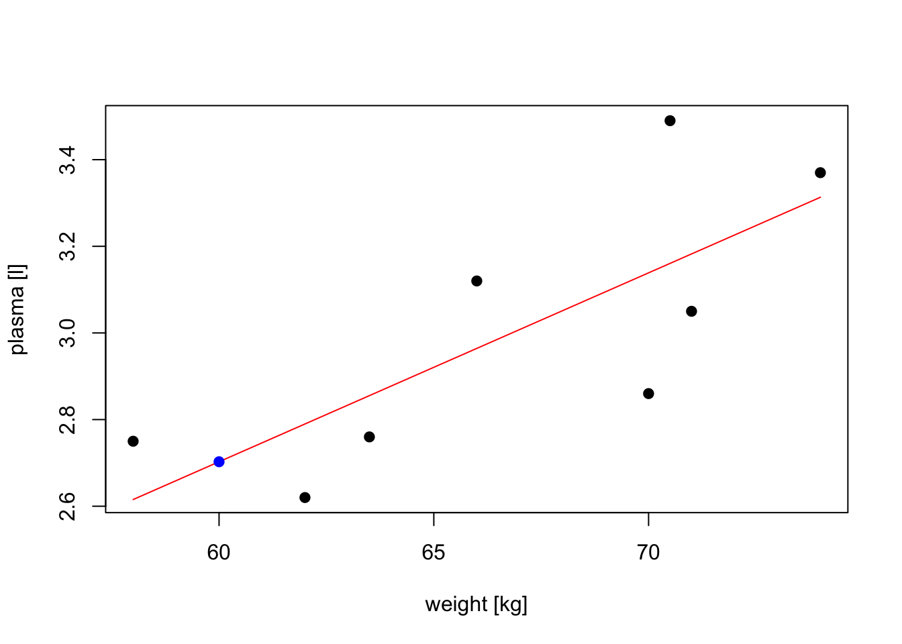
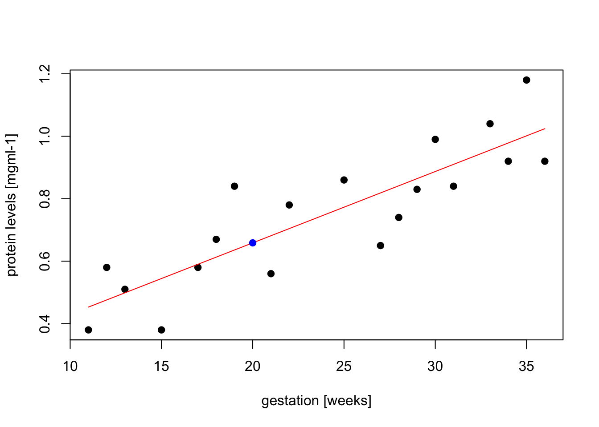
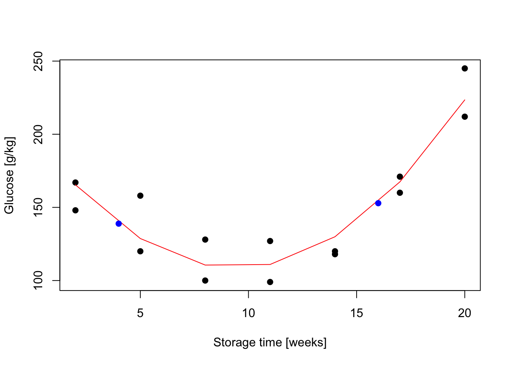

Chapter 8 Introduction to linear models
Aims
- to introduce concept of linear models using simple linear regression
Learning outcomes
- to understand what a linear model is and be familiar with the terminology
- to be able to state linear model in the general vector-matrix notation
- to be able to use the general vector-matrix notation to numerically estimate model parameters
- to be able to use
lm()function for model fitting, parameter estimation, hypothesis testing and prediction
8.1 Statistical vs. deterministic relationship
Relationships in probability and statistics can generally be one of three things: deterministic, random, or statistical:
- a deterministic relationship involves an exact relationship between two variables, for instance Fahrenheit and Celsius degrees is defined by an equation \(Fahrenheit=\frac{9}{5}\cdot Celcius+32\)
- there is no relationship between variables in the random relationship, for instance number of succulents Olga buys and time of the year as Olga keeps buying succulents whenever she feels like it throughout the entire year
- a statistical relationship is a mixture of deterministic and random relationship, e.g. the savings that Olga has left in the bank account depend on Olga’s monthly salary income (deterministic part) and the money spent on buying succulents (random part)
Figure 8.1: Deterministic vs. statistical relationship: a) deterministic: equation exactly describes the relationship between the two variables e.g. Ferenheit and Celcius relationship ; b) statistical relationship between \(x\) and \(y\) is not perfect (increasing relationship), c) statistical relationship between \(x\) and \(y\) is not perfect (decreasing relationship), d) random signal
8.2 What linear models are and are not
- A linear model is one in which the parameters appear linearly in the deterministic part of the model
- e.g. simple linear regression through the origin is a simple linear model of the form \(Y_i = \beta x + \epsilon\) often used to express a relationship of one numerical variable to another, e.g. the calories burnt and the kilometers cycled
- linear models can become quite advanced by including more variables, e.g. the calories burnt could be a function of both the kilometers cycled and status of bike, or the transformation of the variables
More examples where model parameters appear linearly:
- \(Y_i = \alpha + \beta x_i + \gamma x_i + \epsilon_i\)
- \(Y_i = \alpha + \beta x_i^2 \epsilon\)
- \(Y_i = \alpha + \beta x_i^2 + \gamma x_i^3 + \epsilon\)
and an example on a non-linear model where parameter \(\beta\) appears in the exponent of \(x_i\)
- \(Y_i = \alpha + x_i^\beta + \epsilon\)
8.3 Terminology
There are many terms and notations used interchangeably:
- \(y\) is being called:
- response
- outcome
- dependent variable
- \(x\) is being called:
- exposure
- explanatory variable
- dependent variable
- predictor
- covariate
8.4 With linear models we can answer questions such as:
- is there a relationship between exposure and outcome, e.g. body weight and plasma volume?
- how strong is the relationship between the two variables?
- what will be a predicted value of the outcome given a new set of exposure values?
- how accurately can we predict outcome?
- which variables are associated with the response, e.g. is it body weight and height that can explain the plasma volume or is it just the body weight?
8.5 Simple linear regression
- It is used to check the association between the numerical outcome and one numerical explanatory variable
- In practice, we are finding the best-fitting straight line to describe the relationship between the outcome and exposure
- For example, let’s look at the example data containing body weight (kg) and plasma volume (liters) for eight healthy men to see what the best-fitting straight line is.
Example data:
weight <- c(58, 70, 74, 63.5, 62.0, 70.5, 71.0, 66.0) # body weight (kg)
plasma <- c(2.75, 2.86, 3.37, 2.76, 2.62, 3.49, 3.05, 3.12) # plasma volume (liters)Figure 8.2: Scatter plot of the data shows that high plasma volume tends to be associated with high weight and vice verca.
Figure 8.3: Scatter plot of the data shows that high plasma volume tends to be associated with high weight and vice verca. Linear regression gives the equation of the straight line (red) that best describes how the outcome changes (increase or decreases) with a change of exposure variable
The equation for the red line is: \[Y_i=0.086 + 0.044 \cdot x_i \quad for \;i = 1 \dots 8\] and in general: \[Y_i=\alpha + \beta \cdot x_i \quad for \; i = 1 \dots n\]
- In other words, by finding the best-fitting straight line we are building a statistical model to represent the relationship between plasma volume (\(Y\)) and explanatory body weight variable (\(x\))
- If were to use our model \(Y_i=0.086 + 0.044 \cdot x_i\) to find plasma volume given a weight of 58 kg (our first observation, \(i=1\)), we would notice that we would get \(Y=0.086 + 0.044 \cdot 58 = 2.638\), not exactly \(2.75\) as we have for our first man in our dataset that we started with, i.e. \(2.75 - 2.638 = 0.112 \neq 0\).
- We thus add to the above equation an error term to account for this and now we can write our simple regression model more formally as:
\[\begin{equation} Y_i=\alpha + \beta \cdot x_i + \epsilon_i \tag{8.1} \end{equation}\]
where:
- we call \(\alpha\) and \(\beta\) model coefficients
- and \(\epsilon_i\) error terms
8.6 Least squares
- in the above body weight - plasma volume example, the values of \(\alpha\) and \(\beta\) have just appeared
- in practice, \(\alpha\) and \(\beta\) values are unknown and we use data to estimate these coefficients, noting the estimates with a hat, \(\hat{\alpha}\) and \(\hat{\beta}\)
- least squares is one of the methods of parameters estimation, i.e. finding \(\hat{\alpha}\) and \(\hat{\beta}\)
Figure 8.4: Scatter plot of the data shows that high plasma volume tends to be associated with high weight and vice verca. Linear regrssion gives the equation of the straight line (red) that best describes how the outcome changes with a change of exposure variable. Blue lines represent error terms, the vertical distances to the regression line
Let \(\hat{y_i}=\hat{\alpha} + \hat{\beta}x_i\) be the prediction \(y_i\) based on the \(i\)-th value of \(x\):
- Then \(\epsilon_i = y_i - \hat{y_i}\) represents the \(i\)-th residual, i.e. the difference between the \(i\)-th observed response value and the \(i\)-th response value that is predicted by the linear model
- RSS, the residual sum of squares is defined as: \[RSS = \epsilon_1^2 + \epsilon_2^2 + \dots + \epsilon_n^2\] or equivalently as: \[RSS=(y_1-\hat{\alpha}-\hat{\beta}x_1)^2+(y_2-\hat{\alpha}-\hat{\beta}x_2)^2+...+(y_n-\hat{\alpha}-\hat{\beta}x_n)^2\]
- the least squares approach chooses \(\hat{\alpha}\) and \(\hat{\beta}\) to minimize the RSS. With some calculus we get Theorem 8.1
Theorem 8.1 (Least squares estimates for a simple linear regression) \[\hat{\beta} = \frac{S_{xy}}{S_{xx}}\] \[\hat{\alpha} = \bar{y}-\frac{S_{xy}}{S_{xx}}\cdot \bar{x}\]
where:
\(\bar{x}\): mean value of \(x\)
\(\bar{y}\): mean value of \(y\)
\(S_{xx}\): sum of squares of \(X\) defined as \(S_{xx} = \displaystyle \sum_{i=1}^{n}(x_i-\bar{x})^2\)
\(S_{yy}\): sum of squares of \(Y\) defined as \(S_{yy} = \displaystyle \sum_{i=1}^{n}(y_i-\bar{y})^2\)
\(S_{xy}\): sum of products of \(X\) and \(Y\) defined as \(S_{xy} = \displaystyle \sum_{i=1}^{n}(x_i-\bar{x})(y_i-\bar{y})\)
We can further re-write the above sum of squares to obtain
- sum of squares of \(X\), \[S_{xx} = \displaystyle \sum_{i=1}^{n}(x_i-\bar{x})^2 = \sum_{i=1}^{n}x_i^2-\frac{(\sum_{i=1}^{n}x_i)^2}{n})\]
- sum of products of \(X\) and \(Y\)
\[S_{xy} = \displaystyle \sum_{i=1}^{n}(x_i-\bar{x})(y_i-\bar{y})=\sum_{i=1}^nx_iy_i-\frac{\sum_{i=1}^{n}x_i\sum_{i=1}^{n}y_i}{n}\]
Example (Least squares)
Let’s try least squares method to find coefficient estimates in our body weight and plasma volume example
# initial data
weight <- c(58, 70, 74, 63.5, 62.0, 70.5, 71.0, 66.0) # body weight (kg)
plasma <- c(2.75, 2.86, 3.37, 2.76, 2.62, 3.49, 3.05, 3.12) # plasma volume (liters)
# rename variables for convenience
x <- weight
y <- plasma
# mean values of x and y
x.bar <- mean(x)
y.bar <- mean(y)
# Sum of squares
Sxx <- sum((x - x.bar)^2)
Sxy <- sum((x-x.bar)*(y-y.bar))
# Coefficient estimates
beta.hat <- Sxy / Sxx
alpha.hat <- y.bar - Sxy/Sxx*x.bar
# Print estimated coefficients alpha and beta
print(alpha.hat)
## [1] 0.08572428
print(beta.hat)
## [1] 0.04361534In R we can use lm, the built-in function, to fit a linear regression model and we can replace the above code with one line
lm(plasma ~ weight)
##
## Call:
## lm(formula = plasma ~ weight)
##
## Coefficients:
## (Intercept) weight
## 0.08572 0.043628.7 Intercept and Slope
- Linear regression gives us estimates of model coefficient \(Y_i = \alpha + \beta x_i + \epsilon_i\)
- \(\alpha\) is known as the intercept
- \(\beta\) is known as the slope
Figure 8.5: Scatter plot of the data shows that high plasma volume tends to be associated with high weight and vice verca. Linear regression gives the equation of the straight line that best describes how the outcome changes (increase or decreases) with a change of exposure variable (in red)
8.8 Hypothesis testing
- the calculated \(\hat{\alpha}\) and \(\hat{\beta}\) are estimates of the population values of the intercept and slope and are therefore subject to sampling variation
- their precision is measure by their ** estimated standard errors**, e.s.e(\(\hat{\alpha}\)) and e.s.e(\(\hat{\beta}\))
- these estimated standard errors are used in hypothesis testing and building confidence and prediction intervals
The most common hypothesis test involves testing the null hypothesis of:
- \(H_0:\) There is no relationship between \(X\) and \(Y\)
- versus the
alternative hypothesis\(H_a:\) there is some relationship between \(X\) and \(Y\)
Mathematically, this corresponds to testing:
- \(H_0: \beta=0\)
- versus \(H_0: \beta\neq0\)
- since if \(\beta=0\) then the model \(Y_i=\alpha+\beta x_i + \epsilon_i\) reduces to \(Y=\alpha + \epsilon_i\)
Under the null hypothesis:
- \(H_0: \beta = 0\) we have: \(\frac{\hat{\beta}-\beta}{e.s.e(\hat{\beta})} \sim t(n-p)\), where
- \(n\) is number of observations
- \(p\) is number of model parameters
- \(\frac{\hat{\beta}-\beta}{e.s.e(\hat{\beta})}\) is called the t-statistics
- that follows Student’s t distribution with \(n-p\) degrees of freedom
Example (Hypothesis testing)
Let’s look again at our example data. This time we will not only fit the linear regression model but look a bit more closely at the R summary of the model
weight <- c(58, 70, 74, 63.5, 62.0, 70.5, 71.0, 66.0) # body weight (kg)
plasma <- c(2.75, 2.86, 3.37, 2.76, 2.62, 3.49, 3.05, 3.12) # plasma volume (liters)
model <- lm(plasma ~ weight)
print(summary(model))
##
## Call:
## lm(formula = plasma ~ weight)
##
## Residuals:
## Min 1Q Median 3Q Max
## -0.27880 -0.14178 -0.01928 0.13986 0.32939
##
## Coefficients:
## Estimate Std. Error t value Pr(>|t|)
## (Intercept) 0.08572 1.02400 0.084 0.9360
## weight 0.04362 0.01527 2.857 0.0289 *
## ---
## Signif. codes: 0 '***' 0.001 '**' 0.01 '*' 0.05 '.' 0.1 ' ' 1
##
## Residual standard error: 0.2188 on 6 degrees of freedom
## Multiple R-squared: 0.5763, Adjusted R-squared: 0.5057
## F-statistic: 8.16 on 1 and 6 DF, p-value: 0.02893- Under “Estimate” we see estimates of our model coefficients, \(\hat{\alpha}\) (intercept) and \(\hat{\beta}\) (slope, here weight), followed by their estimated standard errors.
- If we were to test if there is an association between weight and plasma volume we would write under \(H_0: \beta = 0\) and \(\frac{\hat{\beta}-\beta}{e.s.e(\hat{\beta})} = \frac{0.04362-0}{0.01527} = 2.856582\)
- and we would compare t-statistics to Student’s t distribution with \(n-p = 8 - 2 = 6\) degrees of freedom (we have two model parameters, \(\alpha\) and \(\beta\))
- we can use Student’s t distribution table or R code to obtain the p-value
2*pt(2.856582, df=6, lower=F)
## [1] 0.02893095- here the observed t-statistics is large and therefore yields a small p-value, meaning that there is sufficient evidence to reject null hypothesis in favor of the alternative and conclude that there is an significant association between weight and plasma volume
8.9 Vector-matrix notations
While in simple linear regression it is feasible to arrive at the parameters estimates using calculus in more realistic settings with multiple regression (more than one explanatory variable in the model) it is more efficient to use vectors and matrices to define the regression model.
Let’s rewrite our simple linear regression model \(Y_i = \alpha + \beta_i + \epsilon_i \quad i=1,\dots n\) into vector-matrix notations.
- First we rename our \(\alpha\) to \(\beta_0\) and \(\beta\) to \(\beta_1\) (it is easier to keep tracking the number of model parameters this way)
- Then we notice that we actually have \(n\) equations such as: \[y_1 = \beta_0 + \beta_1 x_1 + \epsilon_1\] \[y_2 = \beta_0 + \beta_1 x_2 + \epsilon_2\] \[y_3 = \beta_0 + \beta_1 x_3 + \epsilon_3\] \[\dots\] \[y_n = \beta_0 + \beta_1 x_n + \epsilon_n\]
- we can group all \(Y_i\) and \(\epsilon_i\) into column vectors: \(\mathbf{Y}=\begin{bmatrix} y_1 \\ y_2 \\ \vdots \\ y_{n} \end{bmatrix}\) and \(\boldsymbol\epsilon=\begin{bmatrix} \epsilon_1 \\ \epsilon_2 \\ \vdots \\ \epsilon_{n} \end{bmatrix}\)
- we stack two parameters \(\beta_0\) and \(\beta_1\) into another column vector:\[\boldsymbol\beta=\begin{bmatrix} \beta_0 \\ \beta_1 \end{bmatrix}\]
- we then append a vector of ones with the single predictor for each \(i\) and create a matrix with two columns: design matrix \[\mathbf{X}=\begin{bmatrix} 1 & x_1 \\ 1 & x_2 \\ \vdots & \vdots \\ 1 & x_{n} \end{bmatrix}\]
Now we can write our linear model in a vector-matrix notations as: \[\mathbf{Y} = \boldsymbol\beta\mathbf{X} + \boldsymbol\epsilon\]
Definition: vector matrix form of the linear model
The vector-matrix representation of a linear model with \(p-1\) predictors can be written as \[\mathbf{Y} = \boldsymbol\beta\mathbf{X} + \boldsymbol\epsilon\]
where:
- \(\mathbf{Y}\) is \(n \times1\) vector of observations
- \(\boldsymbol\beta\) is \(p \times1\) vector of parameters
- \(\mathbf{X}\) is \(n \times p\) design matrix
- \(\boldsymbol\epsilon\) is \(n \times1\) vector of vector of random errors, indepedent and identically distributed (i.i.d) N(0, \(\sigma^2\))
In full, the above vectors and matrix have the form:
\(\mathbf{Y}=\begin{bmatrix} y_1 \\ y_2 \\ \vdots \\ y_{n} \end{bmatrix}\) \(\boldsymbol\beta=\begin{bmatrix} \beta_0 \\ \beta_1 \\ \vdots \\ \beta_{p} \end{bmatrix}\) \(\boldsymbol\epsilon=\begin{bmatrix} \epsilon_1 \\ \epsilon_2 \\ \vdots \\ \epsilon_{n} \end{bmatrix}\) \(\mathbf{X}=\begin{bmatrix} 1 & x_{1,1} & \dots & x_{1,p-1} \\ 1 & x_{2,1} & \dots & x_{2,p-1} \\ \vdots & \vdots & \vdots & \vdots \\ 1 & x_{n,1} & \dots & x_{n,p-1} \end{bmatrix}\)
Theorem 8.2 (Least squares in vector-matrix notation)
The least squares estimates for a linear regression of the form: \[\mathbf{Y} = \boldsymbol\beta\mathbf{X} + \boldsymbol\epsilon\]
is given by: \[\hat{\mathbf{\beta}}= (\mathbf{X}^T\mathbf{X})^{-1}\mathbf{X}^T\mathbf{Y}\]Example: vector-matrix notation
Following the above definition we can write our weight - plasma volume model as: \[\mathbf{Y} = \boldsymbol\beta\mathbf{X} + \boldsymbol\epsilon\] where:
\(\mathbf{Y}=\begin{bmatrix} 2.75 \\ 2.86 \\ 3.37 \\ 2.76 \\ 2.62 \\ 3.49 \\ 3.05 \\ 3.12 \end{bmatrix}\)
\(\boldsymbol\beta=\begin{bmatrix} \beta_0 \\ \beta_1 \end{bmatrix}\) \(\boldsymbol\epsilon=\begin{bmatrix} \epsilon_1 \\ \epsilon_2 \\ \vdots \\ \epsilon_{8} \end{bmatrix}\) \(\mathbf{X}=\begin{bmatrix} 1 & 58.0 \\ 1 & 70.0 \\ 1 & 74.0 \\ 1 & 63.5 \\ 1 & 62.0 \\ 1 & 70.5 \\ 1 & 71.0 \\ 1 & 66.0 \\ \end{bmatrix}\)
and we can estimate model parameters using \(\hat{\mathbf{\beta}}= (\mathbf{X}^T\mathbf{X})^{-1}\mathbf{X}^T\mathbf{Y}\). We can do it by hand or in R as follows:
n <- length(plasma) # no. of observation
Y <- as.matrix(plasma, ncol=1)
X <- cbind(rep(1, length=n), weight)
X <- as.matrix(X)
# print Y and X to double-check that the format is according to the definition
print(Y)
## [,1]
## [1,] 2.75
## [2,] 2.86
## [3,] 3.37
## [4,] 2.76
## [5,] 2.62
## [6,] 3.49
## [7,] 3.05
## [8,] 3.12
print(X)
## weight
## [1,] 1 58.0
## [2,] 1 70.0
## [3,] 1 74.0
## [4,] 1 63.5
## [5,] 1 62.0
## [6,] 1 70.5
## [7,] 1 71.0
## [8,] 1 66.0
# least squares estimate
# solve() finds inverse of matrix
beta.hat <- solve(t(X)%*%X)%*%t(X)%*%Y
print(beta.hat)
## [,1]
## 0.08572428
## weight 0.043615348.10 Confidence intervals and prediction intervals
- when we estimate coefficients we can also find their confidence intervals, typically 95% confidence intervals, i.e. a range of vales that contain the true unknown value of the parameter
- we can also use linear regression models to predict the response value given a new observation and find prediction intervals. Here, we look at any specific value of \(x_i\), and find an interval around the predicted value \(y_i'\) for \(x_i\) such that there is a 95% probability that the real value of y (in the population) corresponding to \(x_i\) is within this interval
Earlier we said that we use estimated standard error in hypothesis testing and in finding the intervals but we have not yet said how to calculate e.s.e. Using vector-matrix notation we can now write that: \[\frac{(\mathbf{b}\hat{{\boldsymbol\beta}}-\mathbf{b}^T\boldsymbol\beta)}{\sqrt{\frac{RSS}{n-p}\mathbf{b^T(X^TX)^{-1}b}}}\]
where:
the denominator would yield e.s.e(\(\beta_1\)) if \(\mathbf{b^T}=(0 \quad 1)\) and a model \(Y_i = \beta_0 + \beta_1x + \epsilon_i\)
a confidence interval estimate for \(\beta_1\) could be estimated via: \[\mathbf{b^T}\hat{\boldsymbol\beta} \pm (n-p; \frac{1+c}{2})\sqrt{\frac{RSS}{n-p}(\mathbf{b^T}(\mathbf{X^T}\mathbf{X})^{-1}\mathbf{b}))}\]
and a prediction interval with confidence \(c\) is \[\mathbf{b^T}\hat{\boldsymbol\beta} \pm (n-p; \frac{1+c}{2})\sqrt{(\frac{RSS}{n-p}(1+\mathbf{b^T}(\mathbf{X^T}\mathbf{X})^{-1}\mathbf{b}})\]
We will not go further into these calculations here but use R functions to obtain these
- just remember that the prediction interval is always wider than the confidence interval
- note (1 + ) in the prediction interval equation
Example: prediction and intervals
Let’s:
- find confidence intervals for our coefficient estimates
- predict plasma volume for a men weighting 60 kg
- find prediction interval
- plot original data, fitted regression model, predicted observation
# fit regression model
model <- lm(plasma ~ weight)
print(summary(model))
##
## Call:
## lm(formula = plasma ~ weight)
##
## Residuals:
## Min 1Q Median 3Q Max
## -0.27880 -0.14178 -0.01928 0.13986 0.32939
##
## Coefficients:
## Estimate Std. Error t value Pr(>|t|)
## (Intercept) 0.08572 1.02400 0.084 0.9360
## weight 0.04362 0.01527 2.857 0.0289 *
## ---
## Signif. codes: 0 '***' 0.001 '**' 0.01 '*' 0.05 '.' 0.1 ' ' 1
##
## Residual standard error: 0.2188 on 6 degrees of freedom
## Multiple R-squared: 0.5763, Adjusted R-squared: 0.5057
## F-statistic: 8.16 on 1 and 6 DF, p-value: 0.02893
# find confidence intervals for the model coefficients
confint(model)
## 2.5 % 97.5 %
## (Intercept) -2.419908594 2.59135716
## weight 0.006255005 0.08097567
# predict plasma volume for a new observation of 60 kg
# we have to create data frame with a variable name matching the one used to build the model
new.obs <- data.frame(weight = 60)
predict(model, newdata = new.obs)
## 1
## 2.702645
# find prediction intervals
predict(model, newdata = new.obs, interval = "prediction")
## fit lwr upr
## 1 2.702645 2.079373 3.325916
# plot the original data, fitted regression and predicted value
plot(weight, plasma, pch=19, xlab="weight [kg]", ylab="plasma [l]")
lines(weight, model$fitted.values, col="red") # fitted model in red
points(new.obs, predict(model, newdata = new.obs), pch=19, col="blue") # predicted value at 60kg
8.11 Exercises: linear models I
Exercise 8.1 Linear models form
Which of the following models are linear models and why?
- \(Y_i=\alpha + \beta x_i + \epsilon_i\)
- \(Y_i=\beta_0 + \beta_1 x_{i,1} + \beta_2 x_{i,2} + \epsilon_i\)
- \(Y_i=\alpha + \beta x_i + \gamma x_i^2 + \epsilon_i\)
- \(Y_i=\alpha + \gamma x_i^\beta + \epsilon_i\)
Exercise 8.2 Protein levels in pregnancy
The researchers were interested whether protein levels in expectant mothers are changing throughout the pregnancy. Observations have been taken on 19 healthy women and each woman was at different stage of pregnancy (gestation).
Assuming linear model:
- \(Y_i = \alpha + \beta x_i + \epsilon_i\), where \(Y_i\) corresponds to protein levels in i-th observation
and taking summary statisitcs:
- \(\sum_{i=1}^{n}x_i = 456\)
- \(\sum_{i=1}^{n}x_i^2 = 12164\)
- \(\sum_{i=1}^{n}x_iy_i = 369.87\)
- \(\sum_{i=1}^{n}y_i = 14.25\)
- \(\sum_{i=1}^{n}y_i^2 = 11.55\)
- find the least square estimates of \(\hat{\alpha}\) and \(\hat{\beta}\)
- knowing that e.s.e(\(\hat{\beta}) = 0.022844\)
can we:
- reject the null hypothesis that the is no relationship between protein level and gestation, i.e. perform a hypothesis test to test \(H_0:\beta = 0\);
- can we reject the null hypothesis that \(\beta = 0.02\), i.e. perform a hypothesis test to test \(H_0:\beta = 0.02\)
- write down the linear model in the vector-matrix notation and identify response, parameter, design and error matrices
- read in “protein.csv” data into R, set Y as protein (response) and calculate using matrix functions the least squares estimates of model coefficients
- use
lm()function in R to check your calculations - use the fitted model in R to predict the value of protein levels at week 20. Try plotting the data, fitted linear model and the predicted value to assess whether your prediction is to be expected.
Exercise 8.3 The glucose level in potatoes depends on their storage time and the relationship is somehow curvilinear as shown below. As we believe that the quadratic function might describe the relationship, assume linear model in form \(Y_i = \alpha + \beta x_i + \gamma x_i^2 + \epsilon_i \quad i=1,\dots,n\) where \(n=14\) and
- write down the model in vector-matrix notation
- load data to from “potatoes.csv” and use least squares estimates for obtain estimates of model coefficients
- perform a hypothesis test to test \(H_0:\gamma=0\); and comment whether there is a significant quadratic relationship
- use
lm()function to verify your calculations - predict glucose concentration at storage time 4 and 16 weeks. Plot the data, the fitted model and the predicted values
Figure 8.6: Sugar in potatoes: relationship between storage time and glucose content
Answers to selected exercises (linear models)
Exr. 8.2
- \(S_{xx} = \sum_{i=1}^{n}x_i^2-\frac{(\sum_{i=1}^{n}x_i)^2}{n} = 12164 - \frac{456^2}{19} = 1220\)
- \(S_{xy} = \sum_{i=1}^nx_iy_i-\frac{\sum_{i=1}^{n}x_i\sum_{i=1}^{n}y_i}{n} = 369.87 - \frac{(456 \cdot 14.25)}{19} = 27.87\)
- \(\hat{\beta} = \frac{S_{xy}}{S_{xx}} = 27.87 / 1220 = 0.02284\)
- \(\hat{\alpha} = \bar{y}-\frac{S_{xy}}{S_{xx}}\cdot \bar{x} = \frac{14.25}{19}-\frac{27.87}{1220}\cdot \frac{456}{19} = 0.20174\)
We can calculate test statistics following:
- \(\frac{\hat{\beta} - \beta}{e.s.e(\hat{\beta})} \sim t(n-p) = \frac{0.02284 - 0}{0.20174} = 6.934\) where the value follows Student’s t distribution with \(n-p = 19 - 2 = 17\) degrees of freedom. We can now estimate the a p-value using Student’s t distribution table or use R function
2*pt(6.934, df=17, lower=F)
## [1] 2.414315e-06As p-value << 0.001 there is sufficient evidence to reject \(H_0\) in favor of \(H_1\), thus we can conclude that there is a significant relationship between protein levels and gestation
Similarly, we can test \(H_0:\beta = 0.02\), i.e. \(\frac{\hat{\beta} - \beta}{e.s.e(\hat{\beta})} \sim t(n-p) = \frac{0.02284 - 0.02}{0.20174} = 0.01407753\). Now the test statistics is small
2*pt(0.01407753, df=17, lower=F)
## [1] 0.988932p-value is large and hence there is no sufficient evidence to reject \(H_0\) and we can conclude that \(\beta = 0.02\)
- We can rewrite the linear model in vector-matrix formation as \(\mathbf{Y}= \mathbf{\beta}\mathbf{X} + \mathbf{\epsilon}\) where:
response \(\mathbf{Y}=\begin{bmatrix} y_1 \\ y_2 \\ \vdots \\ y_{19} \end{bmatrix}\)
parameters \(\boldsymbol\beta=\begin{bmatrix} \alpha \\ \beta \end{bmatrix}\)
design matrix \(\mathbf{X}=\begin{bmatrix} 1 & x_1 \\ 1 & x_2 \\ \vdots & \vdots \\ 1 & x_{19} \end{bmatrix}\)
errors \(\boldsymbol\epsilon=\begin{bmatrix} \epsilon_1 \\ \epsilon_2 \\ \vdots \\ \epsilon_{19} \end{bmatrix}\)
- The least squares estimates in vector-matrix notation is \(\hat{\boldsymbol\beta}= (\mathbf{X}^T\mathbf{X})^{-1}\mathbf{X}^T\mathbf{Y}\) and we can calculate this in R
# read in data
data.protein <- read.csv("data/lm/protein.csv")
# print out top observations
head(data.protein)
## Protein Gestation
## 1 0.38 11
## 2 0.58 12
## 3 0.51 13
## 4 0.38 15
## 5 0.58 17
## 6 0.67 18
# define Y and X matrices given the data
n <- nrow(data.protein) # nu. of observations
Y <- as.matrix(data.protein$Protein, ncol=1) # response
X <- as.matrix(cbind(rep(1, length=n), data.protein$Gestation)) # design matrix
head(X) # double check that the design matrix looks like it should
## [,1] [,2]
## [1,] 1 11
## [2,] 1 12
## [3,] 1 13
## [4,] 1 15
## [5,] 1 17
## [6,] 1 18
# least squares estimate
beta.hat <- solve(t(X)%*%X)%*%t(X)%*%Y # beta.hat is a matrix that contains our alpha and beta in the model
print(beta.hat)
## [,1]
## [1,] 0.20173770
## [2,] 0.02284426- We use
lm()function to check our calculations
# fit linear regression model and print model summary
protein <- data.protein$Protein # our Y
gestation <- data.protein$Gestation # our X
model <- lm(protein ~ gestation)
print(summary(model))
##
## Call:
## lm(formula = protein ~ gestation)
##
## Residuals:
## Min 1Q Median 3Q Max
## -0.16853 -0.08720 -0.01009 0.08578 0.20422
##
## Coefficients:
## Estimate Std. Error t value Pr(>|t|)
## (Intercept) 0.201738 0.083363 2.420 0.027 *
## gestation 0.022844 0.003295 6.934 2.42e-06 ***
## ---
## Signif. codes: 0 '***' 0.001 '**' 0.01 '*' 0.05 '.' 0.1 ' ' 1
##
## Residual standard error: 0.1151 on 17 degrees of freedom
## Multiple R-squared: 0.7388, Adjusted R-squared: 0.7234
## F-statistic: 48.08 on 1 and 17 DF, p-value: 2.416e-06new.obs <- data.frame(gestation = 20)
y.pred <- predict(model, newdata = new.obs)
# we can visualize the data, fitted linear model (red), and the predicted value (blue)
plot(gestation, protein, pch=19, xlab="gestation [weeks]", ylab="protein levels [mgml-1]")
lines(gestation, model$fitted.values, col="red")
points(new.obs, y.pred, col="blue", pch=19, cex = 1)
Exr. 8.3
- We can rewrite the linear model in vector-matrix formation as \(\mathbf{Y}= \boldsymbol\beta\mathbf{X} + \mathbf{\epsilon}\) where:
response \(\mathbf{Y}=\begin{bmatrix} y_1 \\ y_2 \\ \vdots \\ y_{14} \end{bmatrix}\)
parameters \(\boldsymbol\beta=\begin{bmatrix} \alpha \\ \beta \\ \gamma \end{bmatrix}\)
design matrix \(\mathbf{X}=\begin{bmatrix} 1 & x_1 & x_1^2\\ 1 & x_2 & x_2^2\\ \vdots & \vdots & \vdots \\ 1 & x_{14} & x_{14}^2 \end{bmatrix}\)
errors \(\boldsymbol\epsilon=\begin{bmatrix} \epsilon_1 \\ \epsilon_2 \\ \vdots \\ \epsilon_{14} \end{bmatrix}\)
- load data to from “potatoes.csv” and use least squares estimates for obtain estimates of model coefficients
data.potatoes <- read.csv("data/lm/potatoes.csv")
# define matrices
n <- nrow(data.potatoes)
Y <- data.potatoes$Glucose
X1 <- data.potatoes$Weeks
X2 <- (data.potatoes$Weeks)^2
X <- cbind(rep(1, length(n)), X1, X2)
X <- as.matrix(X)
# least squares estimate
# beta here refers to the matrix of model coefficients incl. alpha, beta and gamma
beta.hat <- solve(t(X)%*%X)%*%t(X)%*%Y
print(beta.hat)
## [,1]
## 200.169312
## X1 -19.443122
## X2 1.030423- we use
lm()function to verify our calculations:
model <- lm(Y ~ X1 + X2)
print(summary(model))##
## Call:
## lm(formula = Y ~ X1 + X2)
##
## Residuals:
## Min 1Q Median 3Q Max
## -17.405 -11.250 -8.071 12.911 29.286
##
## Coefficients:
## Estimate Std. Error t value Pr(>|t|)
## (Intercept) 200.1693 15.0527 13.298 4.02e-08 ***
## X1 -19.4431 3.1780 -6.118 7.54e-05 ***
## X2 1.0304 0.1406 7.329 1.49e-05 ***
## ---
## Signif. codes: 0 '***' 0.001 '**' 0.01 '*' 0.05 '.' 0.1 ' ' 1
##
## Residual standard error: 16.4 on 11 degrees of freedom
## Multiple R-squared: 0.8694, Adjusted R-squared: 0.8457
## F-statistic: 36.61 on 2 and 11 DF, p-value: 1.373e-05- perform a hypothesis test to test \(H_0:\gamma=0\); and comment whether we there is a significant quadratic term
- \(\frac{\hat{\gamma} - \gamma}{e.s.e(\hat{\gamma})} \sim t(n-p) = \frac{1.030423 - 0}{0.1406} = 7.328755\) where the value follows Student’s t distribution with \(n-p = 19 - 2 = 17\) degrees of freedom. We can now estimate the a p-value using Student’s t distribution table or use a function in R
2*pt(7.328755, df=14-3, lower=F)
## [1] 1.487682e-05As p-value << 0.001 there is sufficient evidence to reject \(H_0\) in favor of \(H_1\), thus we can conclude that there is a significant quadratic relationship between glucose and storage time
- predict glucose concentration at storage time 4 and 16 weeks
new.obs <- data.frame(X1 = c(4, 16), X2 = c(4^2, 16^2))
pred.y <- predict(model, newdata = new.obs)
plot(data.potatoes$Weeks, data.potatoes$Glucose, xlab="Storage time [weeks]", ylab="Glucose [g/kg]", pch=19)
lines(data.potatoes$Weeks, model$fitted.values, col="red")
points(new.obs[,1], pred.y, pch=19, col="blue")